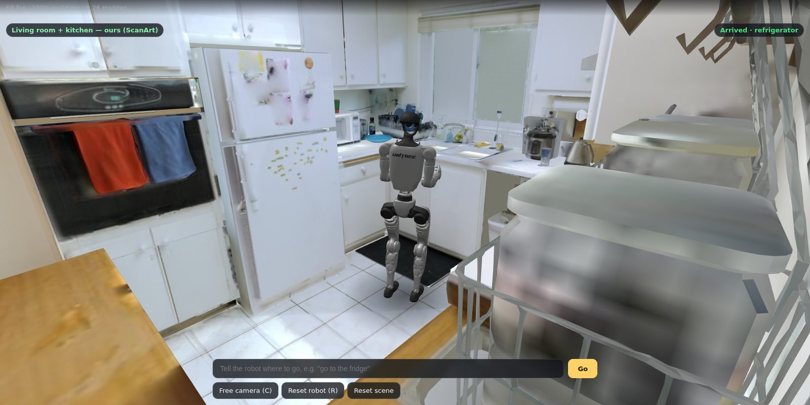
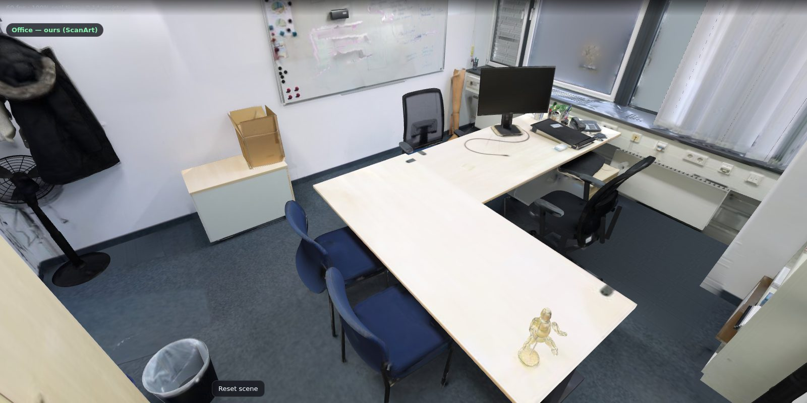

Photoreal
Rendered from camera poses that were never used to build them, our scenes match the real photos, down to papers on the desk.
Real-to-sim for robot learning and evaluation
A laser scan shows a room, but a robot cannot use it: the scan is one fused shell, with holes where the scanner saw nothing, doors that never open and cups that never move. We rebuild the real room as a photoreal simulation scene: every object separate and solid, every door, drawer and lid working, and the whole scene ready to run in a physics engine. A coding agent builds the scene from the captured photos and scan, without a human in the loop.
Object, joint and physics numbers: the six finished rooms shown on this page.
Rendered from camera poses that were never used to build them, our scenes match the real photos, down to papers on the desk.
Each real object is its own clean, closed model: chairs with legs and wheels, monitors with stands, cups, bins and boxes. 95–100% of the annotated objects are recovered.
Doors, drawers, cabinet fronts, windows and lids open like the real ones, with the inside modelled behind them.
Loads into Isaac Sim and MuJoCo as is: closed meshes, separated objects, a mass and a material for every object.
A Unitree G1 with a learned walking controller, live in your browser (MuJoCo physics), inside one of our rebuilt rooms. Walk it around, push chairs and doors, carry things from the counter to the table: movable objects and jointed parts are simulated, not painted on. Text commands plan a path around the furniture. How the same robot fares on the original scan is shown in the robot videos below.

Loads about 30 MB. Best in a desktop browser; click inside the demo before using the keyboard.
One of our full rooms running in MuJoCo in your browser. Grab any door, drawer or object and pull. Everything you can move here is a separate rigid body or a jointed part with its own range.

Drag to orbit · click and drag a part to move it · scroll to zoom
Six finished rooms from ScanNet++ (all 906 are being rebuilt): a living room with a kitchen, a robotics lab, offices, a lounge. Every video below is rendered from our scene; no frame is copied from the photos.
Drag the handle to compare the original scan with ours at the same iPhone frame. Hold Real photo to see what the camera saw.
Because objects are separate and parts are jointed, robots can do real tasks in our scenes.
“Tall light-coloured storage cabinets stand in a row along the wall on your left. Open one door of the first cabinet of that row by at least 30 degrees. Then walk along the aisle between the cabinet row and the desks to the far end of the room, to the white drawer cabinet that has a printer standing on top of it. Open one drawer of that cabinet by at least 15 cm. Then walk back to where you started and stop there.”
“You are standing at the open end of a kitchen; the living room is behind you. This is one task with three parts; do them in this order. (1) Open the refrigerator: it is the tall white fridge-freezer on the left-hand side of the kitchen, next to the black wall oven. Open its LOWER, larger door (it has a vertical handle on the side next to the oven) by at least 45 degrees, so that you can reach inside. (2) Then walk to the far end of the kitchen and pick up the drinking glass (a small clear tumbler with a blue print) that stands on the counter there, between the coffee machine and the kettle, and lift it off the counter. (3) Carry the glass to the refrigerator and put it inside the open fridge, then let go of it and pull your hand out; it must stay inside.”
Train in the rooms robots will actually meet: real clutter, real furniture, real distances, with every part that should move, moving.
Test a policy in a twin of the room before (or instead of) the real robot. Our scenes are scored against held-out photos, the laser scan and human joint annotations.
The agent builds a room in a few hours without human edits, from the same captures that existing 3D datasets already have. We are scaling it across ScanNet++.